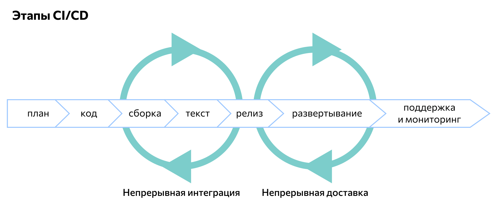

CI/CD
CI/CD (Continuous Integration, Continuous Delivery — непрерывная интеграция и доставка) — это технология автоматизации тестирования и доставки новых модулей разрабатываемого проекта заинтересованным сторонам (разработчикам, аналитикам, инженерам качества, конечным пользователям и др.).
Принципы CI/CD
Концепция непрерывной интеграции и развертывания относится к agile-методологиям разработки программного обеспечения. Ее основная цель — уделение достаточного внимания бизнес-требованиям, безопасности и качеству кода конечного продукта. В рамках подхода решаются следующие задачи:
автоматизация последовательной сборки, упаковки и тестирования программных продуктов;
автоматизация развертывания приложения в различных окружениях;
минимизация ошибок и уязвимостей программного продукта.
Разработка по методике CI/CD соответствует таким основным принципам:
Распределение ответственности. Задачи и этапы разработки разделяются между членами команды или ее подгруппами (при работе над большим проектом). Рабочий процесс организуется с учетом бизнес-логистики, внедрения сквозных функций, проведения тестов, безопасности хранения данных и т.д.
Сокращение рисков. Каждый разработчик или подгруппа разработчиков должны стремиться минимизировать уязвимости и ошибки на всех этапах разработки. Для этого постоянно контролируется бизнес-логистика, проводится пользовательское тестирование продукта, оптимизируется хранение, обработка данных и т.д.
Оптимизация обратной связи. Успех проекта зависит от того, как работают друг с другом разработчики, клиенты и пользователи. Это влияет на скорость внесения в приложение корректировок и обновлений. Если сборку и тестирование можно автоматизировать, то во многих других операциях требуется участие человека. Чтобы взаимодействие происходило конструктивнее, уменьшается количество посредников между заказчиком, исполнителями и пользователями.
Создание рабочей среды. Для удобства совместной работы у разработчиков должно быть общее рабочее пространство. Помимо основной ветки процесса в нем должна быть побочная – в ней удобнее проводить тестирование, вносить корректировки, отслеживать отказоустойчивость и т.д.
Этапы CI/CD
Написание кода
Сборка
Ручное тестирование
Релиз
Развертывание
Поддержка и отслеживание
Планирование
